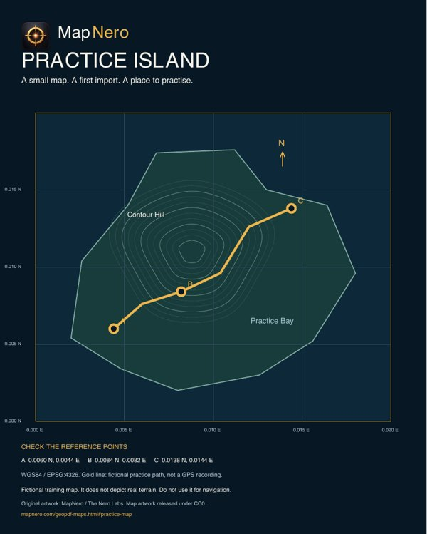

¿Es tu primer archivo de mapa?
Empieza con un mapa pequeño de un lugar que conozcas. Comprueba el archivo, elige tu dispositivo y sigue los pasos de importación.
Prueba el mapa de práctica →TUS MAPAS EN CAMPO
Importa un mapa PDF georreferenciado en MapNero para iPhone o Android. Ábrelo, comprueba su ubicación y úsalo junto con tus registros de campo.
Descarga gratuita. Las opciones y los límites de importación dependen del formato, la plataforma y el plan. Consulta las guías antes de elegir una suscripción.
Cómo importar tu mapa ↓
Empieza con un mapa pequeño de un lugar que conozcas. Comprueba el archivo, elige tu dispositivo y sigue los pasos de importación.
Prueba el mapa de práctica →Si ya tienes un PDF georreferenciado, ve a los pasos de importación de tu dispositivo. Después, comprueba su posición y pruébalo sin conexión.
Ir a los pasos de importación →PRUEBA PRIMERO UN ARCHIVO PEQUEÑO
Descarga un GeoPDF de una página y 52 KB. Sigue los pasos de importación de abajo. Contiene una isla ficticia con tres puntos de referencia y sus coordenadas.
Es una zona de práctica ficticia cerca de 0° N, 0° E, no un terreno real. Tu posición GPS normalmente estará fuera. No lo uses para navegar.
Tras importarlo, abre el mapa y compara los puntos A, B y C con sus coordenadas impresas. Vuelve a abrirlo sin conexión. Descarga por separado cualquier zona del mapa base.

Compara estas posiciones de referencia impresas en WGS84 / EPSG:4326, en grados decimales. Si el visor muestra otro sistema de coordenadas, convierte los valores antes de compararlos.
| Punto | Latitud (°N) | Longitud (°E) |
|---|---|---|
| A | 0.0060 | 0.0044 |
| B | 0.0084 | 0.0082 |
| C | 0.0138 | 0.0144 |
ANTES DE EMPEZAR
Un GeoPDF incluye información que sitúa el mapa en el mundo real. Un PDF normal puede contener solo una imagen de un mapa. Abrirlo no determina dónde se encuentra tu posición GPS dentro de esa imagen.
Usa un mapa con georreferenciación válida y comprueba un lugar conocido tras importarlo. Si tu posición aparece fuera del mapa, compárala con el mapa base y revisa el archivo original.
ELIGE TU DISPOSITIVO
También puedes abrir un archivo compatible con MapNero desde la app Archivos. Los PDF de varias páginas requieren Pro en las plataformas de Apple.
Ver la guía de importación para Apple →También puedes seleccionar un archivo compatible en Descargas o Archivos y usar Abrir con MapNero.
Ver la guía de importación para Android →
PREPÁRATE ANTES DE SALIR DE COBERTURA
Termina de importar el archivo mientras tengas acceso a él. Activa el modo avión, vuelve a abrir el mapa y comprueba la zona y el nivel de detalle que necesitas. Si también necesitas una región del mapa base, descárgala y pruébala por separado antes de salir de cobertura.
Comprueba que la importación haya terminado y que la vista esté dentro de los límites geográficos del mapa. La falta de una descarga del mapa base es un problema distinto de la importación de un PDF local.
La guía de Apple explica cómo georreferenciar una imagen manualmente con Core o un plan superior. Se necesitan al menos tres puntos de control bien distribuidos, no alineados y con coordenadas conocidas. Lee la guía para georreferenciar fotos antes de empezar.
Primero contrasta el mapa con una posición conocida y conserva el archivo original y tus registros guardados. Las guías explican cómo volver a importar un PDF antiguo para procesarlo con el lector de georreferenciación actual. Revisa esos pasos antes de sustituir una copia importada.
Guardar un escaneo como PDF no le añade coordenadas geográficas. La georreferenciación manual de imágenes permite alinear puntos conocidos, pero no corrige las deformaciones locales ni los pliegues del papel. Comprueba otros lugares reconocibles repartidos por el mapa que no hayas usado como puntos de control. Un buen ajuste en los puntos elegidos no demuestra precisión en el resto del mapa. Trata un mapa deformado como una referencia aproximada.
Prepara tu PDF, elige tu dispositivo y sigue la guía de importación.